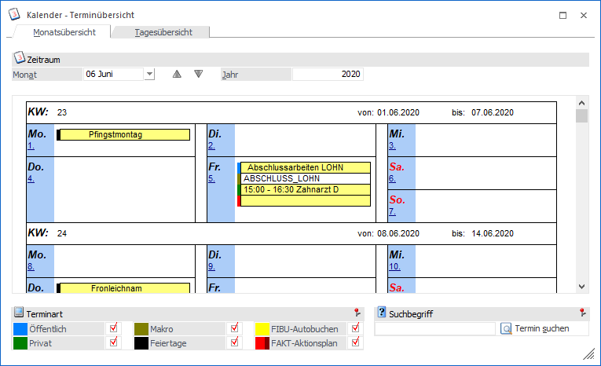
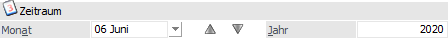
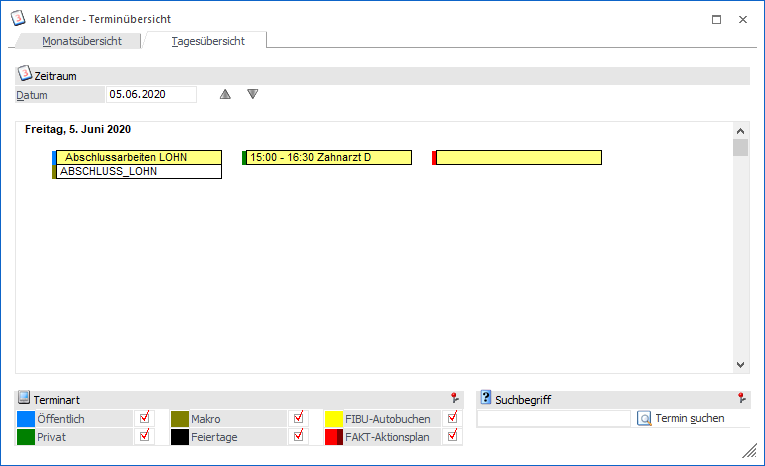
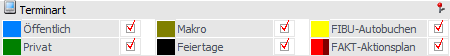
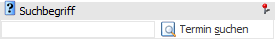
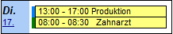
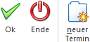

Im Kalender der WinLine, welcher in jeder Applikation über
1 Datei
1 Kalender
aufgerufen werden kann, können Termine und Aktionen hinterlegt und bearbeitet werden.

Standardmäßig startet der Kalender in der Monatsübersicht, d.h. alle Tage des gewählten Monats werden angezeigt. Befinden sich an einem Tag Kalendereinträge (z.B. Vorschläge für den Autobeleg) werden diese ebenfalls dargestellt.
Zeitraum

An dieser Stelle kann der Zeitraum gewählt werden, welcher betrachtet werden soll. Die Auswahl erfolgt entweder durch Direkteingabe oder es wird mit Hilfe der Buttons durch die Monate geblättert.
Durch einen Klick auf das Datum, wechselt man in die jeweilige Tagesansicht.

Terminart

Folgende Terminarten stehen zur Verfügung:
ü Öffentlich
ü Privat
ü Makro
ü Feiertage
ü FIBU-Autobuchen
ü FAKT-Aktionsplan
Ø Öffentlich / Privat
Diese Terminarten sind reine Informationsfelder, d.h. es steht keine Funktion bzw. Aktion dahinter, sondern dient lediglich als reine Terminverwaltung.
Ø Makro
Mit dieser Terminart wird es möglich sein, Makros, die in der WinLine aufgenommen wurden, zeitgesteuert abzuspielen.
Ø Feiertage
Abhängig von der Ländereinstellung im Mandantenstamm werden die jeweiligen Feiertage angezeigt (derzeit werden nur die österreichischen Feiertage angezeigt). Die Termine werden - sofern sie noch nicht vorhanden sind - vom Programm automatisch angelegt, können aber auch manuell verändert oder gelöscht werden.
Ø FIBU-Autobuchen
In der Finanzbuchhaltung der WinLine haben Sie die Möglichkeit in einem Aktionsplan zu definieren, dass bestimmte Buchungsstapel entweder einmalig oder in einem bestimmten Rhythmus verbucht werden sollen. Wurde so eine Aktion festgelegt, so ist diese unter der Terminart FIBU-Autobuchen im Kalender ersichtlich und kann hier auch bearbeitet werden.
Ø FAKT-Autobeleg
In der Fakturierung der WinLine haben Sie die Möglichkeit in einem Aktionsplan zu definieren, dass bestimmte Belege entweder einmalig oder in einem bestimmten Rhythmus dupliziert werden sollen (z.B. aufgrund einer Kundenliste). Wurde so eine Aktion festgelegt, so ist diese unter der Terminart FAKT-Autobeleg im Kalender ersichtlich und kann hier auch bearbeitet werden.
Suchbegriff

Ø Suchbegriff
Durch Eingabe eines Suchbegriffs und Anwahl des Buttons "Termin suchen" wird im aktuellen Monat nach einem passenden Termin gesucht. Wird einer gefunden, so wird dieser im Kalender mit einer grünen Hintergrundfarbe versehen.
Bearbeiten von Terminen
Durch einen Klick mit der Maus auf einen Eintrag im Kalender, kann der jeweilige Termin bearbeitet werden.

Bei den Terminarten "Privat", "Öffentlich", "Makro" und "Feiertag" wird wie bei der Neuanlage das Fenster Termin bearbeiten geöffnet, in dem der neue Rhythmus eingetragen werden kann.
Bei den Terminarten "FIBU-Autobuchen" und "FAKT-Autobeleg" wird das Fenster "Kalendereintrag" geöffnet, in dem Terminserien und Einzeltermine bearbeitet werden können.
Buttons

Ø Ok
Durch Anwahl des Buttons "Ok" bzw. der Taste F5 werden alle Termine neu berechnet.
Ø Ende
Durch Anwahl des Buttons "Ende" bzw. der Taste ESC wird das Fenster geschlossen.
Ø neuer Termin
Mit Hilfe dieses Buttons kann ein neuer Termin erstellt werden.